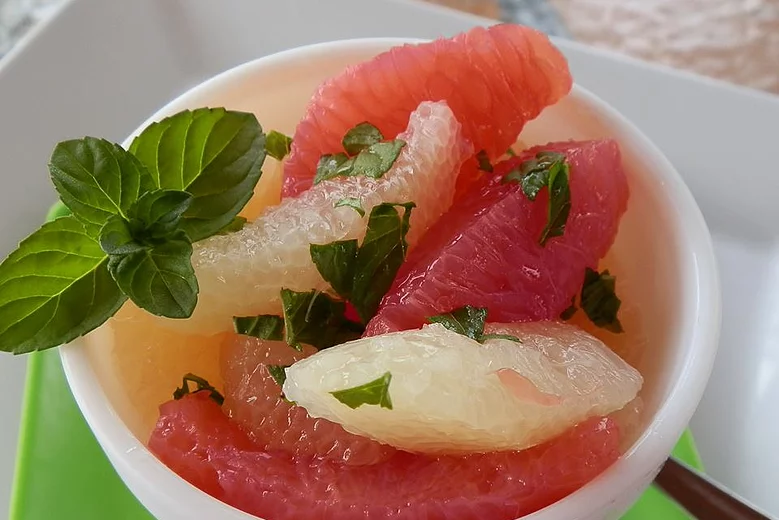

Drunken Grapefruit Salad

You won't believe how good this is. Buy the grapefruit in refrigerated jars in your market's produce section.
Ingredients
- 8 cups refrigerated grapefruit, drained and juice reserved
- ¼ cup white sugar
- 3 fluid ounces gin
- 8 leaves fresh mint, minced
- 8 whole mint leaves
Steps
- Mix grapefruit, 1/2 cup reserved juice, and sugar in a bowl until sugar dissolves.
- Transfer grapefruit mixture to 8 serving cups; top each with about 1 teaspoon gin.
- Sprinkle minced mint over each cup. Garnish each cup with 1 mint leaf.
HOME